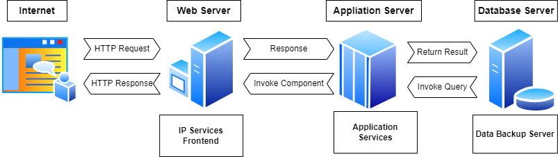

Typical three-tier server architecture. Tier 1 - Web server, tier 2 - application server, Tier 3 - database server. The goal of picoserver is layer 1. The following is an example of an Internet transaction. When the client requests to enter the java servlet page, it is first received by the front-end server tier 1. Tier 1 identifies the java servlet pages that must be processed and usually uses the remote message interface (RMI) to make a request to Tier 2. Tier 2 starts a database query on Tier 3 server, then generates results and sends relevant information to Tier 1. Finally, tier 1 sends the generated content to the client.
